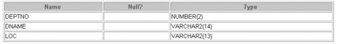
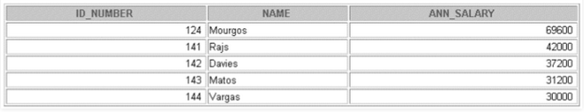

A database object is any defined object in a database that is used to store or reference data.Anything which we make from create command is known as Database Object.It can be used to hold and manipulate the data.Some of the examples of database objects are : view, sequence, indexes, etc.
- Table – Basic unit of storage; composed rows and columns
- View – Logically represents subsets of data from one or more tables
- Sequence – Generates primary key values
- Index – Improves the performance of some queries
- Synonym – Alternative name for an object
Different database Objects :
- Table – This database object is used to create a table in database.
Syntax :
CREATE TABLE [schema.]table (column datatype [DEFAULT expr][, ...]);Example :
CREATE TABLE dept (deptno NUMBER(2), dname VARCHAR2(14), loc VARCHAR2(13));Output :
DESCRIBE dept;

- View – This database object is used to create a view in database.A view is a logical table based on a table or another view. A view contains no data of its own but is like a window through which data from tables can be viewed or changed. The tables on which a view is based are called base tables. The view is stored as a SELECT statement in the data dictionary.
Syntax :
CREATE [OR REPLACE] [FORCE|NOFORCE] VIEW view [(alias[, alias]...)] AS subquery [WITH CHECK OPTION [CONSTRAINT constraint]] [WITH READ ONLY [CONSTRAINT constraint]];Example :
CREATE VIEW salvu50 AS SELECT employee_id ID_NUMBER, last_name NAME, salary*12 ANN_SALARY FROM employees WHERE department_id = 50;Output :
SELECT * FROM salvu50;

- Sequence – This database object is used to create a sequence in database.A sequence is a user created database object that can be shared by multiple users to generate unique integers. A typical usage for sequences is to create a primary key value, which must be unique for each row.The sequence is generated and incremented (or decremented) by an internal Oracle routine.
Syntax :
CREATE SEQUENCE sequence [INCREMENT BY n] [START WITH n] [{MAXVALUE n | NOMAXVALUE}] [{MINVALUE n | NOMINVALUE}] [{CYCLE | NOCYCLE}] [{CACHE n | NOCACHE}];Example :
CREATE SEQUENCE dept_deptid_seq INCREMENT BY 10 START WITH 120 MAXVALUE 9999 NOCACHE NOCYCLE;Check if sequence is created by :
SELECT sequence_name, min_value, max_value, increment_by, last_number FROM user_sequences; - Index – This database object is used to create a indexes in database.An Oracle server index is a schema object that can speed up the retrieval of rows by using a pointer.Indexes can be created explicitly or automatically. If you do not have an index on the column, then a full table scan occurs.
An index provides direct and fast access to rows in a table. Its purpose is to reduce the necessity of disk I/O by using an indexed path to locate data quickly. The index is used and maintained automatically by the Oracle server. Once an index is created, no direct activity is required by the user.Indexes are logically and physically independent of the table they index. This means that they can be created or dropped at any time and have no effect on the base tables or other indexes.
Syntax :
CREATE INDEX index ON table (column[, column]...);Example :
CREATE INDEX emp_last_name_idx ON employees(last_name); - Synonym – This database object is used to create a indexes in database.It simplify access to objects by creating a synonym(another name for an object). With synonyms, you can Ease referring to a table owned by another user and shorten lengthy object names.To refer to a table owned by another user, you need to prefix the table name with the name of the user who created it followed by a period. Creating a synonym eliminates the need to qualify the object name with the schema and provides you with an alternative name for a table, view, sequence,procedure, or other objects. This method can be especially useful with lengthy object names, such as views.
In the syntax:
PUBLIC : creates a synonym accessible to all users
synonym : is the name of the synonym to be created
object : identifies the object for which the synonym is createdSyntax :
CREATE [PUBLIC] SYNONYM synonym FOR object;
Example :
CREATE SYNONYM d_sum FOR dept_sum_vu;
References :
Database objects – ibm
Introduction to Oracle 9i: SQL Student Guide Volume 2